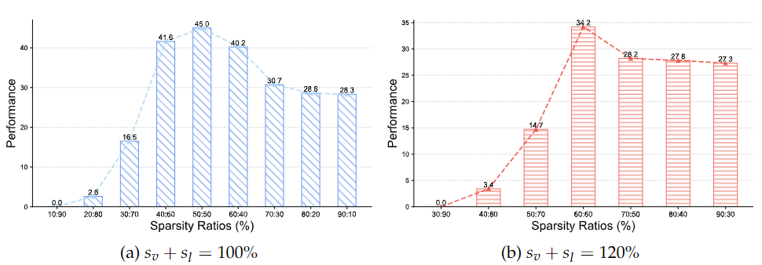
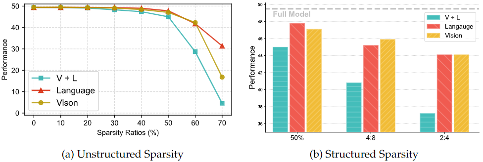
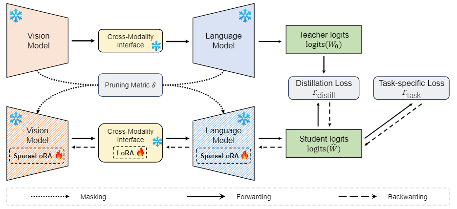
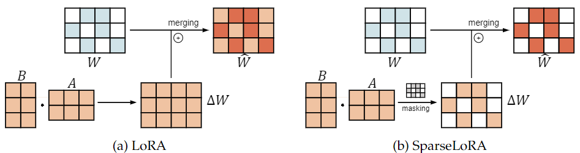
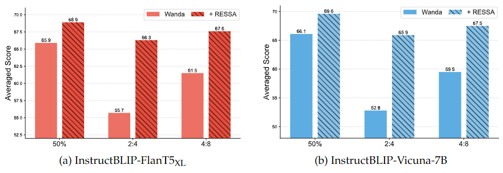

Rethinking Pruning for
Vision-Language Models:
Strategies for Effective Sparsity and Performance Restoration
Equal Sparsity Law
Under a constant sum of sparsity ratios, pruning vision and language models with identical sparsity ($s_V = s_L$) yields near-optimal multimodal performance.
Zero-Latency SparseLoRA
Applies binary structural masks to low-rank updates ($M \odot BA$), allowing direct merging into sparse base weights with zero serving latency overhead.
RESSA Restoration
Cross-modality adaptation with multi-task distillation recovers up to +15.7% accuracy across VQAv2, OK-VQA, GQA, and NoCaps.
Cross-Modality Sparsity Allocator & Simulator
Simulate cross-modality pruning budgets on modern VLMs (e.g. InstructBLIP-FlanT5-XL: 1.2B ViT + 188M Q-Former + 3B LLM).
Live Simulation Metrics Equal Allocation
Two Critical Empirical Laws of VLM Pruning
Systematic experiments across vision-language architectures reveal surprising principles governing cross-modality sparsity.
Equal Cross-Modality Sparsity is Near-Optimal
When holding the combined sparsity ratio sum constant (e.g. $s_V + s_L = 100\%$), allocating 50% to Vision and 50% to Language outperforms asymmetric allocations (such as 80%/20% or 20%/80%). Disproportionate pruning in either modality severely breaks cross-attention alignment.

Language-Dominant Pruning Under Total Budget
Because language backbones constitute over ~70-80% of parameters in modern VLMs, pruning the language model alone preserves the visual encoder's perceptual resolution while achieving substantial overall parameter reduction without crippling cross-modal grounding.

Interactive Benchmark Comparison Across Sparsity Ratios
Comparing post-pruning accuracy curves between Wanda, SparseGPT, DSnoT, and RESSA.
The RESSA Restoration Framework
Repairing pruned Vision-Language Models through cross-modality representation alignment and zero-latency sparse fine-tuning.
Cross-Modality Adaptation via Distillation
When pruning removes weights from the visual encoder and LLM backbone, the internal cross-modal representation distribution shifts dramatically. RESSA re-aligns query-key projections through multi-task knowledge distillation:
Balances task loss with cross-attention knowledge transfer from the unpruned dense teacher model.


SparseLoRA: Preserving Sparsity Without Adapter Lag
Conventional LoRA adapter updates $\Delta W = B \cdot A$ produce dense matrices that break sparse hardware acceleration if merged directly into sparse weights. SparseLoRA applies the binary sparsity mask $M$ to LoRA:
The resulting merged weight $\widetilde{W}$ maintains the exact sparsity pattern of $W_{ ext{sparse}}$, enabling direct deployment without sidecar adapter latency.
Full Downstream Performance Across Benchmarks
Comparing Dense Baseline, Wanda, SparseGPT, DSnoT, and RESSA on OKVQA, GQA, NoCaps, VQAv2, and Flickr30k.

Comprehensive Benchmark Evaluation
Evaluation across Visual QA (VQAv2, OK-VQA, GQA, TextVQA), Image Captioning (NoCaps), and Object Hallucination (POPE).
| Method | Sparsity ($s_V / s_L$) | VQAv2 (Acc ↑) | OK-VQA (Acc ↑) | GQA (Acc ↑) | TextVQA (Acc ↑) | NoCaps (CIDEr ↑) | Status |
|---|
Quickstart & Step-by-Step Execution
Reproduce pruning, RESSA adaptation, and multimodal evaluation in a few shell commands.
# Clone the repository
git clone https://github.com/shwai-he/VLM-Compression.git
cd VLM-Compression
# Create conda environment
conda create -n vlm_comp python=3.9 -y
conda activate vlm_comp
# Install PyTorch & dependencies
pip install torch torchvision torchaudio --index-url https://download.pytorch.org/whl/cu118
pip install -r requirements.txt
pip install -e .Citation
If you build upon our ideas, codebase, or findings, please cite our papers:
@inproceedings{he2024rethinking,
title={Rethinking Pruning for Vision-Language Models: Strategies for Effective Sparsity and Performance Restoration},
author={He, Shwai and Li, Ang and Chen, Tianlong},
booktitle={arXiv preprint arXiv:2404.02424},
year={2024}
}
@misc{he2024ressa,
title={RESSA: Repair Sparse Vision-Language Models via Sparse Cross-Modality Adaptation},
author={Shwai He and Ang Li and Tianlong Chen},
year={2024},
eprint={2404.02424},
archivePrefix={arXiv},
primaryClass={cs.CV}
}